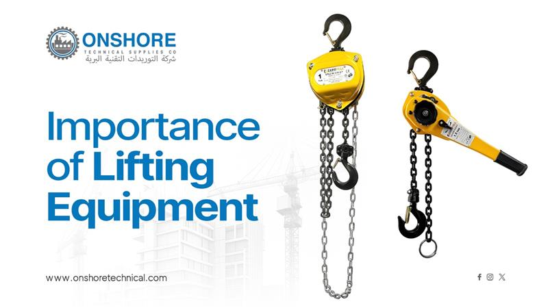

Importance of Lifting Equipment in Industrial Operations

In modern industrial environments, lifting equipment plays a critical role in ensuring smooth, safe, and efficient operations. From construction sites and warehouses to oil & gas facilities and manufacturing plants, the need to move heavy loads reliably has made material handling systems indispensable.
Businesses today rely heavily on trusted lifting equipment suppliers in Saudi Arabia and beyond to maintain productivity while meeting strict safety standards.
Why Lifting Equipment Matters
Handling heavy loads manually is not only inefficient but also dangerous. Lifting equipment minimizes human effort while significantly reducing workplace injuries. Properly selected tools ensure:
- Improved safety: Reduces accidents caused by manual lifting
- Higher efficiency: Speeds up operations and reduces downtime
- Cost savings: Minimizes labour costs and equipment damage
- Precision handling: Enables accurate placement of heavy materials
Industries that invest in high-quality material handling equipment often experience fewer operational disruptions and better compliance with safety regulations.
Types of Lifting Equipment Used in Industries
Understanding the different types of lifting tools helps businesses choose the right solution for their specific needs.
1. Chain Slings and Hoists
One of the most used lifting solutions is chain slings and hoists. These are ideal for heavy-duty applications due to their durability and strength.
Chain slings are used for lifting loads with multiple attachment points. They are highly resistant to abrasion and heat, making them suitable for harsh industrial environments.
Hoists (manual or electric) are designed to lift or lower loads vertically with precision and control. These tools are widely used in construction, shipping, and manufacturing industries.
2. Cranes
Cranes are essential for lifting and moving extremely heavy materials over large distances. Common types include Tower cranes, Mobile cranes, and Overhead cranes. They are commonly used in large-scale construction and infrastructure projects.
3. Forklifts
Forklifts are versatile machines used for lifting and transporting materials over short distances. They are widely used in warehouses and logistics operations.
4. Lifting Beams and Spreaders
These tools help distribute the weight of loads evenly, preventing damage and improving stability during lifting operations.
5. Wire Rope Slings
Wire rope slings are flexible and strong, making them ideal for lifting irregular or heavy loads in industries like marine and oil & gas.
Role of Material Handling Equipment in Efficiency
Efficient material handling equipment ensures that goods move seamlessly through different stages of production and distribution. Key benefits include:
- Faster operations: Reduces time spent on moving materials
- Better inventory management: Streamlines storage and retrieval
- Reduced damage: Ensures proper handling of fragile or heavy goods
- Enhanced productivity: Workers can focus on skilled tasks instead of manual labor
For businesses operating in demanding sectors, partnering with a reliable lifting equipment supplier in Saudi Arabia ensures access to high-quality tools tailored to industry needs.
Safety Considerations in Lifting Operations
Safety is the most critical factor when using lifting equipment. Improper use or low-quality tools can lead to serious accidents.
Best Practices:- Conduct regular equipment inspections
- Ensure proper training for operators
- Use equipment with appropriate load capacity
- Follow industry safety standards and guidelines
- Replace worn-out components immediately
Choosing the Right Lifting Equipment Supplier
Selecting the right supplier is just as important as choosing the equipment itself. A trusted supplier offers:
- Certified and high-quality products
- Technical support and guidance
- Compliance with international safety standards
- Custom solutions for specific industries
Businesses in the Middle East often prefer experienced lifting equipment suppliers in Saudi Arabia due to their understanding of regional industrial requirements and regulations.
Conclusion
Lifting equipment is a backbone of industrial operations, enabling businesses to handle heavy loads safely and efficiently. From chain slings and hoists to advanced cranes and forklifts, each tool plays a vital role in improving productivity and ensuring worker safety.
Investing in the right material handling equipment and partnering with a reliable supplier can make a significant difference in operational success. As industries continue to evolve, the demand for advanced, durable, and safe lifting solutions will only grow.
Frequently Asked Questions
Suppliers in Saudi Arabia understand regional industrial demands and offer products that comply with local safety standards, ensuring reliability and faster support.
Chain slings and hoists, cranes, forklifts, and wire rope slings are among the most widely used lifting equipment across industries.
The right equipment depends on load capacity, environment, and application. A professional supplier can assess your needs and recommend suitable solutions.
Regular inspections should be conducted before use and periodically as per safety regulations to prevent accidents.
You can source high-quality material handling equipment from certified and experienced suppliers who offer tested and compliant products along with after-sales support.